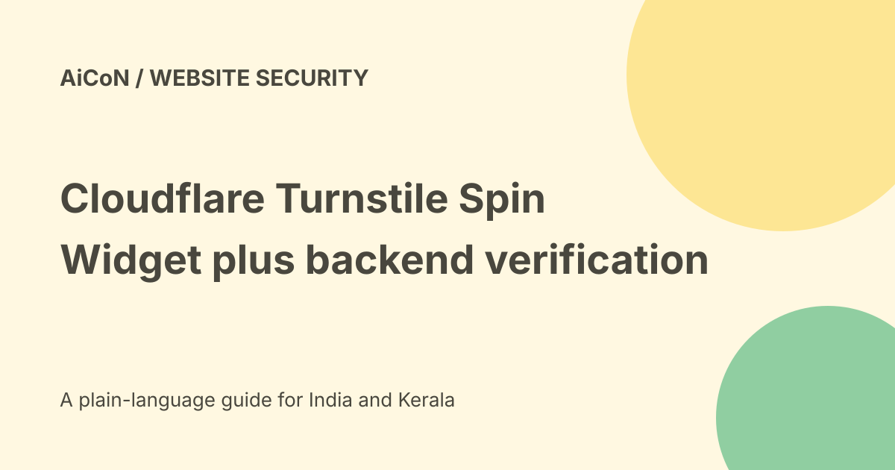

Turnstile Spin: setup help and mandatory backend checks
Cloudflare describes Turnstile Spin as a guided coding-agent workflow for installing, repairing or migrating Turnstile. It can help with both the visible widget and backend validation. A widget on the page alone is not protection: the server must verify the token and enforce the result.

The two-part design
The browser widget runs a challenge and returns a token. The application's backend sends that token to Cloudflare's Siteverify service with the required secret.
The application then decides whether the protected request may continue. Simply disabling a button in the browser does not stop an attacker calling the form endpoint directly.
What Spin does
The official blog describes finding relevant frontend and backend code, proposing a plan and waiting for approval. The coding agent then makes the approved changes inside the developer's codebase.
Cloudflare says Spin does not send application code to Cloudflare or ask Cloudflare to modify it remotely. That statement concerns Spin's flow; the coding agent's own data handling still needs separate review.
New setup, repair and migration
The blog describes three cases: adding Turnstile where no challenge exists, repairing a widget missing server-side validation and replacing another CAPTCHA integration.
A dashboard Fix with Spin notice can flag a widget with traffic but no Siteverify calls. That is a useful setup warning, not proof that every other security control is correctly configured.
Entry points and actual timing
The blog names the Cloudflare dashboard, Wrangler and a public agent workflow. It describes use with coding agents such as Claude Code, Cursor and Codex.
The September article says the dashboard feature had been released in July. It is therefore a September explanation of an existing rollout, not necessarily a same-day first launch.
Server validation is mandatory
Cloudflare's validation documentation says tokens can be forged if an application accepts any client-submitted string. Every protected request must go through the server-side check.
The documentation lists tokens as valid for three hundred seconds, or five minutes, and single-use. Expired or reused tokens produce a timeout-or-duplicate failure. Refresh the widget for a new valid attempt.
What to verify beyond success
Read the response and confirm the expected hostname and action where your flow uses them. A token generated for an unrelated context should not silently pass another protected operation.
Handle network failure, invalid tokens and repeated submissions. Keep legitimate users informed and avoid a retry path that performs the protected action twice.
A careful developer checklist
- Back up the current project and identify the protected endpoint.
- Read the official setup and validation documentation.
- Review the coding agent's proposed changes.
- Keep the secret only in approved server-side configuration.
- Check that the backend enforces Siteverify results.
- Test a valid request and a missing or forged token.
- Test expiry, replay and verification failure.
- Check hostname, action and error handling.
- Inspect the live form and logs after deployment.
No widget, key, backend or site code was changed for this guide.
Secret handling
The site key shown to the browser is different from the secret used for server validation. Do not put the secret in client-side JavaScript, a public repository or a shared conversation.
A free static host alone does not provide a secure place to keep it. Use a suitable backend or serverless function and review that service's own quotas and costs.
Free plan limits
The current Turnstile plan page lists Free access with up to twenty widgets, ten configured hostnames per widget and seven-day analytics lookback. It lists unlimited challenges or verification requests.
Enterprise has different hostname and analytics capabilities. Free Turnstile does not make the application's backend compute or the chosen coding-agent subscription free.
India and privacy boundaries
The sources describe use on any site without requiring traffic to be proxied through Cloudflare. They do not establish an India-only processing location or every organisation's privacy compliance.
Review the operator's privacy requirements, accessibility and actual user experience. Turnstile complements authentication, rate limits and application validation rather than replacing them.
What changed since the original post?
We add the July rollout context, mandatory backend enforcement, token lifetime and free-plan limits. The setup agent is not treated as proof of a completed security review.
Frequently asked questions
Is the visible widget enough?
No. Server validation is required.
Can a token be reused?
No. It is single-use and expires after five minutes.
Was protection installed here?
No.
Sources: Official Spin explanation · Official server validation requirements · Current Turnstile plans. Checked 7 October 2026.